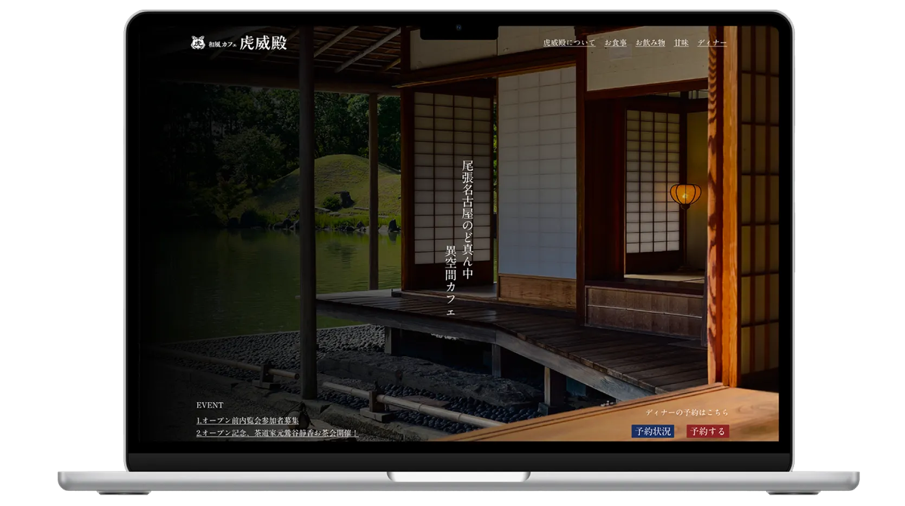

WORKS
和風カフェサイトデザイン
制作ジャンル
- Webサイト
制作期間
12時間
担当
- デザイン
使用技術/ツール
- Figma
- Adobe Illustrator
- Adobe Photoshop
使用フォント
- A-OTF A1 明朝 Std
架空の和風カフェ「虎威殿」のサイトデザインを行いました。デスクトップのみのデザインです。
概要
学校の課題で和風カフェのサイトデザインを行いました。店舗名は「虎威伝」 この課題が初めて「要件をもとにサイトをデザインする。」というものでした。
Point1
「っぽい」というデザイン
「〇〇っぽい」という言葉があります。
「〇〇を連想させる」という言葉なのですが、ここを履き違えてしまうと、全く別物になってしまいます。 そのため課題に取り組む前に「和風」という言葉について調べました。
和風とは「芸術や衣食住などの文化において「日本的」な色合いや味わいを形容する言葉である(wikipediaより引用)」
ただしこの言葉には落とし穴があり、「日本的」であれば「和風」ということになってしまいます。例えば「大正レトロ」のデザインもこの言葉に当てはめると「和風」となります。
何を持って「和風」とするかは個人の自由ではありますが、少なくとも今回の課題の和風は「古来の日本的で伝統的な食文化」を表すものと言えるでしょう。
配色
サイトの配色は以下の通りです。
「和風」という言葉は自分の認識では「淡く美しい伝統美」という認識がありました。
そのため基本的な配色は淡い色を使い、アクセントカラーに派手の代表格である「金色」の若干明度を下げることで、派手すぎない、バランスの取れた落ち着きのある配色にしています。
ファーストビュー
Z型の視線誘導をベースにデザインをしています。
黒系のグラデーションのフィルターをかけることで、より落ち着いた雰囲気、かつフォントも相まって高級感のあるような印象を持たています。
メイン
小見出しは縦書きかつ、背景に影のようなイメージをつけることで、立体感を出しました。馴染みながらも注目度をアップさせています。
「ディナーを目立たせたい」という要件がありました。なのでディナーの部分は グラデーションをかけながら背景色 を黒にすることで、一層夜のイメージになったと思います。
フッター
フッターはファーストビューと同じように外観の写真を背景として扱っています。
マップはイラストレーターで作成、カラーをモノクロにすることで、フッターのデザインと馴染ませながらも、明度差で所在地を強調することができました。
その他リンクバナーや文字も全て白色で統一することで、フッター自体にも一体感が生まれています。
デザインを終えて
サイトの雰囲気について事前に調べておいたおかげでズレのない「〇〇っぽさ」を表せたと思っています。また、要所要所で自分なりに目立たせる方法を実践してみたり、デザインの4原則について徹底させることで、見やすさのあるデザインができたのではないでしょうか。
Figmaについて
この課題はFigmaで作成をしています。目的はFigmaのオートレイアウト機能を覚えるため。
前期はPhotoshopを用いてデザインデータの作成を行っていましたが、世の中のUIツールの流れからブログ作成時よりデザインの作成は「Illustrator」や「Photoshop」を使わなくてもできることに関して、Figmaでの作成に取り組んでいます。
この時点ではFigmaで使えていたことはオートレイアウトのみではありましたが、フッターや見出しなど、反復/整列を守るべき場所で使うことによって、統率の取れたデザインに仕上げることができたと思います。